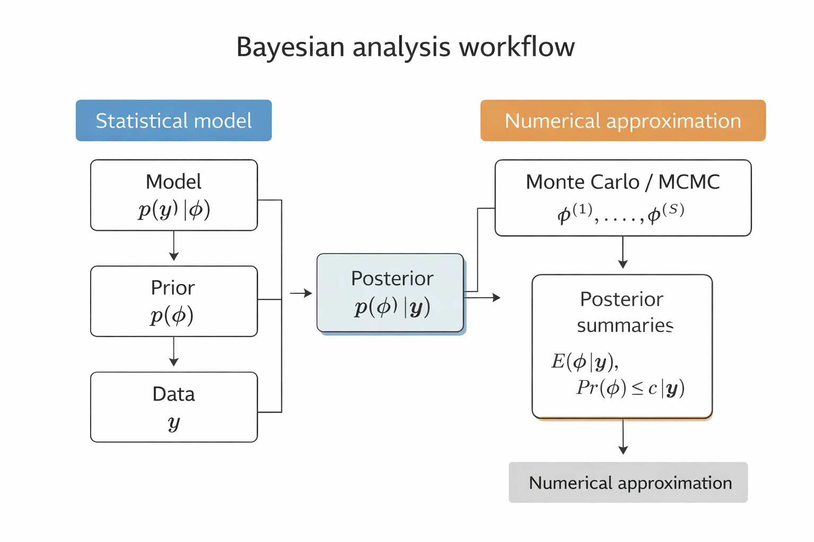

understand why posterior approximation is needed beyond conjugate models
learn how to approximate posteriors using discrete grids and Gibbs sampling
understand how Gibbs sampling uses full conditional distributions to generate dependent posterior samples
5.1 Introduction
For many multi-parameter Bayesian models, the joint posterior distribution does not belong to a standard family (e.g., exponential family) and is therefore difficult to sample from it directly. However, it is often the case that sampling from the full conditional distribution of each parameter is straightforward.
In such situations, posterior approximation can be carried out using the Gibbs sampler, an iterative MC algorithm that constructs a dependent sequence of parameter values whose distribution converges to the target joint posterior distribution. Here, we introduce the Gibbs sampler in the context of the normal model with a semi-conjugate prior, and study how well it approximates the posterior distribution.
5.2 A Semi-conjugate Prior Distribution
For normal distribution, it may be modelled our uncertainty about the population mean \(\theta\) as depending on the sampling variance \(\sigma^2\) via
This formulation ties the prior variance of \(\theta\) to the sampling variability of the data, and \(\mu_0\) can be interpreted as representing \(\kappa_0\) prior observations from the population.
In some settings this dependence is reasonable, but in others we may wish to specify prior uncertainty about \(\theta\)independently of \(\sigma^2\) denoted as \(\theta \perp\sigma^2\), so that \[
p(\theta, \sigma^2) = p(\theta)\,p(\sigma^2).
\]
One such specification is the following semi-conjugate prior distribution: \[
\theta \sim \text{Normal}(\mu_0, \tau_0^2),
\qquad
\frac{1}{\sigma^2} \sim \text{Gamma}\!\left(\frac{\nu_0}{2}, \frac{\nu_0 \sigma_0^2}{2}\right).
\]
then the posterior distribution of \(\theta\) is \[
\theta \mid \sigma^2, y_1, \dots, y_n
\;\sim\;
\text{Normal}(\mu_n, \tau_n^2),
\] where \[
\mu_n
=
\frac{\mu_0 / \tau_0^2 + n \bar{y} / \sigma^2}
{1 / \tau_0^2 + n / \sigma^2},
\qquad
\tau_n^2
=
\left( \frac{1}{\tau_0^2} + \frac{n}{\sigma^2} \right)^{-1}.
\] Those calculation may be found in Section 5.2 in Hoff (2009).
This conditional posterior distribution will form one step of the Gibbs sampler.
NoteKey Takeaway
The joint posterior of \((\theta, \sigma^2)\) is not available in closed form.
The full conditional distributions of \(\theta \mid \sigma^2, y\) and \(\sigma^2 \mid \theta, y\)are available in standard forms.
This structure makes the Gibbs sampler a natural and efficient tool for posterior approximation.
In the next section, we derive the full conditional distribution of \(\sigma^2\) and combine the two conditional updates into a complete Gibbs sampling algorithm.
In the conjugate case where \(\tau_0^2\) is proportional to \(\sigma^2\), we showed that the marginal posterior distribution \[
p(\sigma^2 \mid y_1,\ldots,y_n)
\] is an inverse-gamma distribution. In this setting, MC samples of \((\theta,\sigma^2)\) from the joint posterior distribution can be obtained by the following two-step procedure:
Sample \[
\sigma^{2(s)} \sim p(\sigma^2 \mid y_1,\ldots,y_n),
\] which is an inverse-gamma distribution.
Sample \[
\theta^{(s)} \sim p(\theta \mid \sigma^{2(s)}, y_1,\ldots,y_n),
\] which is a normal distribution.
This approach works because both full conditional distributions are standard and easy to sample from.
However, when \(\tau_0^2\) is not proportional to \(\sigma^2\), the marginal posterior distribution of the precision \[
\frac{1}{\sigma^2}
\] is not a gamma distribution, nor any other standard distribution from which we can easily sample. As a result, direct MC sampling from the marginal posterior is no longer straightforward, motivating the need for alternative approximation methods.
5.3 Discrete Approximations
Posterior Density Ratios
Let \(\tilde{\sigma}^2 = 1/\sigma^2\) denote the precision. Recall that the posterior distribution of \((\theta, \tilde{\sigma}^2)\) is equal to the joint distribution\[
p(\theta, \tilde{\sigma}^2, y_1,\dots,y_n),
\] divided by \(p(y_1,\dots,y_n)\), which does not depend on the parameters. Therefore, the relative posterior probabilities of two parameter values \((\theta_1, \tilde{\sigma}_1^2)\) and \((\theta_2, \tilde{\sigma}_2^2)\) are directly computable: \[
\begin{aligned}
\frac{p(\theta_1, \tilde{\sigma}_1^2 \mid y_1,\dots,y_n)}
{p(\theta_2, \tilde{\sigma}_2^2 \mid y_1,\dots,y_n)}
&= \frac{p\left(\theta_1, \tilde{\sigma}_1^2, y_1, \ldots, y_n\right) / p\left(y_1, \ldots, y_n\right)}{p\left(\theta_2, \tilde{\sigma}_2^2, y_1, \ldots, y_n\right) / p\left(y_1, \ldots, y_n\right)}
\\
&=
\frac{p(\theta_1, \tilde{\sigma}_1^2, y_1,\dots,y_n)}
{p(\theta_2, \tilde{\sigma}_2^2, y_1,\dots,y_n)}.
\end{aligned}
\]
Joint Distribution
The joint density can be written as \[
\begin{aligned}
p(\theta, \tilde{\sigma}^2, y_1,\dots,y_n)
&= p(\theta, \tilde{\sigma}^2)\, p(y_1,\dots,y_n \mid \theta, \tilde{\sigma}^2) \\
&= \text{Normal}(\theta \mid \mu_0, \tau_0^2)
\times \text{Gamma}\!\left(\tilde{\sigma}^2 \mid \frac{\nu_0}{2}, \frac{\nu_0 \sigma_0^2}{2}\right) \\
&~~~~
\times \prod_{i=1}^n \text{Normal}\!\left(y_i \mid \theta, \frac{1}{\tilde{\sigma}^2}\right).
\end{aligned}
\]
All components of this joint density are standard distributions and therefore easy to evaluate numerically.
Discrete Posterior Approximation
A discrete approximation to the posterior distribution is obtained by evaluating relative posterior probabilities on a finite grid.
Let
\(\{\theta_1,\ldots,\theta_G\}\) be a grid of values for \(\theta\);
\(\{\tilde{\sigma}_1^2,\ldots,\tilde{\sigma}_H^2\}\) be a grid of values for \(\tilde{\sigma}^2\).
At each grid point \((\theta_g,\tilde{\sigma}_h^2)\), compute \[
p(\theta_g,\tilde{\sigma}_h^2,y_1,\ldots,y_n).
\]
This defines a valid joint probability distribution over \[
\theta \in \{\theta_1,\ldots,\theta_G\}, \qquad
\tilde{\sigma}^2 \in \{\tilde{\sigma}_1^2,\ldots,\tilde{\sigma}_H^2\},
\] since the probabilities sum to one. If the joint prior distribution were discrete on this grid, then \(p_D\) would be exactly the posterior distribution.
NoteKey Takeaway
A discrete approximation to the posterior distribution is obtained by constructing a grid over the parameter space and evaluating relative posterior probabilities on that grid.
Specifically:
choose grids \(\{\theta_1,\dots,\theta_G\}\) and \(\{\tilde{\sigma}_1^2,\dots,\tilde{\sigma}_H^2\}\) consisting of evenly spaced parameter values;
evaluate \(p(\theta_g, \tilde{\sigma}_h^2, y_1,\dots,y_n)\) for each grid point \((\theta_g, \tilde{\sigma}_h^2)\);
assign posterior probabilities proportional to these values:
This discrete approximation can then be normalized and used to compute posterior summaries such as means, variances, and credible regions.
Marginal Posterior Distributions
Marginal posterior distributions can be obtained by summing over the grid. For example, the marginal posterior of \(\theta\) is \[
p_D(\theta_k \mid y_1,\ldots,y_n)
=
\sum_{h=1}^H
p_D(\theta_k,\tilde{\sigma}_h^2 \mid y_1,\ldots,y_n).
\]
A similar expression holds for \(\tilde{\sigma}^2\).
We illustrate the discrete (grid-based) posterior approximation using the midge data from the previous chapter. The sample summaries are \[
n = 9, \qquad \bar y = 1.804, \qquad s^2 = 0.017.
\]
In the conjugate normal–inverse-gamma setup, the prior variance of \(\theta\) is tied to the sampling variance (through \(\sigma^2/\kappa_0\)). When \(s^2\) is very small, this can unintentionally force the prior uncertainty about \(\theta\) to be unrealistically small. The semiconjugate prior avoids this coupling.
We use the semiconjugate prior \[
\theta \sim \text{Normal}(\mu_0,\tau_0^2), \qquad
\tilde\sigma^2 = 1/\sigma^2 \sim \text{Gamma}\!\left(\frac{\nu_0}{2}, \frac{\nu_0\sigma_0^2}{2}\right),
\] with \[
\mu_0 = 1.9,\qquad \tau_0 = 0.95,\qquad \nu_0 = 1,\qquad \sigma_0^2 = 0.01.
\]
The joint posterior \(p(\theta,\tilde\sigma^2 \mid y_1,\ldots,y_n)\) is evaluated on a \(100\times100\) grid (evenly spaced values of \(\theta\) and \(\tilde\sigma^2\)) and then normalized to form \(p_D(\theta,\tilde\sigma^2\mid y)\). The joint discrete approximation corresponds to the first panel of the Figure below, while the marginals are obtained by summation, e.g. \[
p_D(\theta_k \mid y_1,\ldots,y_n)
=
\sum_{h=1}^H p_D(\theta_k,\tilde\sigma_h^2 \mid y_1,\ldots,y_n),
\] which yields the second and third panels in the Figure below.
Discrete approximations are conceptually simple and transparent.
They are feasible only in low-dimensional parameter spaces.
As the dimension increases, grid-based methods become infeasible.
For higher-dimensional models, simulation-based methods such as the Gibbs sampler become essential.
This motivates Markov chain Monte Carlo methods, such as the Gibbs sampler, which we introduce soon.
5.4 Sampling from the Conditional Distribution
Suppose, for the moment, that the value of \(\theta\) were known. The conditional distribution of \(\tilde{\sigma}^2\) given \(\theta\) and \(\{y_1,\ldots,y_n\}\) satisfies \[
\begin{aligned}
p(\tilde{\sigma}^2 \mid \theta, y_1,\ldots,y_n)
& \;\propto\; p\left(y_1, \ldots, y_n, \theta, \tilde{\sigma}^2\right) \\
&=
p(y_1,\ldots,y_n \mid \theta, \tilde{\sigma}^2)\, p(\tilde{\sigma}^2) p(\theta \mid \tilde{\sigma}^2)
\end{aligned}
\]
If \(\theta\) and \(\sigma^2\) are independent a priori, then \(p(\theta,\tilde{\sigma}^2)=p(\theta)p(\tilde{\sigma}^2)\) and \(p\left(\theta \mid \tilde{\sigma}^2\right)=p(\theta)\). Note that, now, since \(p(\theta)\) does have have \(\tilde{\sigma}^2\) involved, so it can be treated like a constant in calculating the posterior for \(\tilde{\sigma}^2\). Then
Alternatively, if one want to use \(\sigma^2\) instead, the normal sampling model and the semi-conjugate prior, \[
\begin{aligned}
p(\sigma^2 \mid \theta, y_1,\ldots,y_n)
&\propto
(\sigma^2)^{-n/2}
\exp\!\left\{-\frac{1}{2\sigma^2}\sum_{i=1}^n (y_i-\theta)^2 \right\}
\times
(\sigma^2)^{-\nu_0/2-1}
\exp\!\left\{-\frac{\nu_0\sigma_0^2}{2\sigma^2}\right\} \\
&=
(\sigma^2)^{-(\nu_0+n)/2-1}
\exp\!\left\{
-\frac{1}{2\sigma^2}
\left[\nu_0\sigma_0^2 + \sum_{i=1}^n (y_i-\theta)^2\right]
\right\}.
\end{aligned}
\]
This is the kernel of an inverse-gamma distribution. Therefore, \[
\sigma^2 \mid \theta, y_1,\ldots,y_n
\sim
\text{Inverse-Gamma}\!\left(\frac{\nu_n}{2}, \frac{\nu_n\sigma_n^2(\theta)}{2}\right),
\] where \[
\nu_n = \nu_0 + n,
\qquad
\sigma_n^2(\theta)
=
\frac{1}{\nu_n}
\left[
\nu_0\sigma_0^2 + \sum_{i=1}^n (y_i-\theta)^2
\right].
\]
Here, \[
s_n^2(\theta) = \frac{1}{n}\sum_{i=1}^n (y_i-\theta)^2
\] is the unbiased estimator of \(\sigma^2\) when \(\theta\) is known.
This result shows that we can easily sample from \(p(\sigma^2 \mid \theta, y_1,\ldots,y_n)\).
Similarly, as shown earlier, we can sample from \(p(\theta \mid \sigma^2, y_1,\ldots,y_n)\). But so far, we have not shown how to sample from the joint posterior distribution of \((\theta, \sigma^2)\), which is our ultimate goal, i.e., sampling from \(p(\theta,\sigma^2 \mid y_1,\ldots,y_n)\).
5.4.1 Motivation for Gibbs sampling
Suppose we were given a single draw \(\sigma^{2(1)}\) from the marginal posterior \(p(\sigma^2 \mid y_1,\ldots,y_n)\).
We could then sample \[
\theta^{(1)} \sim p(\theta \mid \sigma^{2(1)}, y_1,\ldots,y_n),
\] and the pair \((\theta^{(1)}, \sigma^{2(1)})\) would be a draw from the joint posterior distribution of \((\theta,\sigma^2)\).
Moreover, \(\theta^{(1)}\) can be regarded as a draw from the marginal posterior \(p(\theta \mid y_1,\ldots,y_n)\).
From this value, we can generate \[
\sigma^{2(2)} \sim p(\sigma^2 \mid \theta^{(1)}, y_1,\ldots,y_n).
\]
Since \(\theta^{(1)}\) is drawn from the marginal distribution of \(\theta\) and \(\sigma^{2(2)}\) is drawn from the conditional distribution of \(\sigma^2\) given \(\theta^{(1)}\), the pair \((\theta^{(1)}, \sigma^{2(2)})\) is again a draw from the joint posterior distribution.
Repeating this alternating procedure suggests that the two full conditional distributions, \[
p(\theta \mid \sigma^2, y_1,\ldots,y_n)
\quad\text{and}\quad
p(\sigma^2 \mid \theta, y_1,\ldots,y_n),
\] can be used to generate samples from the joint posterior distribution.
This iterative sampling scheme is the basis of the Gibbs sampler, introduced in the next section, as long as we have the \(\sigma^{2(1)}\) to start the process.
5.5 Gibbs Sampler
The distributions \[
p(\theta \mid \sigma^2, y_1,\ldots,y_n)
\quad \text{and} \quad
p(\sigma^2 \mid \theta, y_1,\ldots,y_n)
\] are called the full conditional distributions of \(\theta\) and \(\sigma^2\), respectively.
Each is the conditional distribution of one parameter given all the other parameters and the data.
We now formalize the iterative sampling idea introduced in the previous section.
Let \[
\phi^{(s)} = \bigl\{ \theta^{(s)}, \sigma^{2(s)} \bigr\}
\] denote the current state of the parameters at iteration \(s\).
Given \(\phi^{(s)}\), a new state \(\phi^{(s+1)}\) is generated by alternately sampling from the full conditional distributions:
Repeating these two steps produces a sequence \[
\phi^{(1)}, \phi^{(2)}, \ldots
\] that forms a Markov chain, since each new state depends only on the immediately preceding state.
Under mild regularity conditions, the distribution of \(\phi^{(s)}\) converges to the joint posterior distribution \[
p(\theta,\sigma^2 \mid y_1,\ldots,y_n)
\] as \(s \to \infty\).
This iterative procedure is known as the Gibbs sampler, a special case of Markov chain Monte Carlo (MCMC) methods.
Set \[
\phi^{(s+1)} = \bigl\{ \theta^{(s+1)}, \tilde{\sigma}^{2(s+1)} \bigr\}.
\]
It generates a dependent sequence of parameter values \[
\bigl\{ \phi^{(1)}, \phi^{(2)}, \ldots, \phi^{(S)} \bigr\}.
\]
Below we give R code for implementing this Gibbs sampling scheme for the normal model with a semi-conjugate prior distribution.
This algorithm is called the Gibbs sampler, and generates a dependent sequence of parameter values \[
\{\phi^{(1)}, \phi^{(2)}, \ldots, \phi^{(S)}\}.
\] The R code below implements this sampling scheme for the normal model with a semiconjugate prior distribution.
mu0 <-1.9t20 <-0.95^2s20 <-0.01nu0 <-1y <-c(1.64, 1.70, 1.72, 1.74, 1.82, 1.82, 1.82, 1.90, 2.08)G <-100H <-100### datamean.y <-mean(y)var.y <-var(y)n <-length(y)### starting valuesS <-1000PHI <-matrix(nrow = S, ncol =2)PHI[1, ] <- phi <-c(mean.y, 1/ var.y)###### Gibbs samplingset.seed(8310)for (s in2:S) {# generate a new theta value from its full conditional mun <- (mu0 / t20 + n * mean.y * phi[2]) / (1/ t20 + n * phi[2]) t2n <-1/ (1/ t20 + n * phi[2]) phi[1] <-rnorm(1, mun, sqrt(t2n))# generate a new 1/sigma^2 value from its full conditional nun <- nu0 + n s2n <- (nu0 * s20 + (n -1) * var.y + n * (mean.y - phi[1])^2) / nun phi[2] <-rgamma(1, nun /2, nun * s2n /2) PHI[s, ] <- phi}colnames(PHI) <-c("mu", "sigma2_inv")head(PHI,3)
Finally, we compute some empirical quantiles from the Gibbs samples.
# ### Credible interval for the population mean (theta)# quantile(PHI[,1], c(.025, .5, .975))# ### Credible interval for the population precision (1/sigma^2)# quantile(PHI[,2], c(.025, .5, .975))# ### Credible interval for the population standard deviation (sigma)# quantile(1/sqrt(PHI[,2]), c(.025, .5, .975))ci_table <-rbind("θ (mean)"=quantile(PHI[,1], c(.025, .5, .975)),"1/σ² (precision)"=quantile(PHI[,2], c(.025, .5, .975)),"σ (standard deviation)"=quantile(1/sqrt(PHI[,2]), c(.025, .5, .975)))ci_table
The empirical distribution of the Gibbs samples closely matches the discrete approximation to the posterior distribution. Comparing Figures 6.1 and 6.3 shows that the simulated draws reproduce the shape of the posterior density. This suggests that the Gibbs sampler is an effective method for approximating \[
p(\theta,\sigma^2 \mid y_1,\ldots,y_n).
\]
left: Gibbs samples overlaid on contours of the discrete approximation
middle: kernel density estimate of Gibbs samples of \(\theta\), with
gray vertical lines = Gibbs 2.5% and 97.5% quantiles
black vertical lines = classical t-interval for the mean
right: kernel density estimate of Gibbs samples of \(\tilde{\sigma}^2 = 1/\sigma^2\)
5.6 Gibbs sampler using an R package
So far, we have implemented the Gibbs sampler by hand in R. In practice, a common alternative is to use a package interface to JAGS, such as rjags or a higher-level wrapper like jagsUI. These tools let us specify the model, data, and parameters to monitor, and then run the Gibbs sampler automatically. Note that these packages require JAGS to be installed on your system. User Manual can be found Here.
Processing function input.......
Done.
Compiling model graph
Resolving undeclared variables
Allocating nodes
Graph information:
Observed stochastic nodes: 9
Unobserved stochastic nodes: 2
Total graph size: 24
Initializing model
Adaptive phase.....
Adaptive phase complete
Burn-in phase, 1000 iterations x 3 chains
Sampling from joint posterior, 4000 iterations x 3 chains
Calculating statistics.......
Done.
fit
JAGS output for model '4', generated by jagsUI.
Estimates based on 3 chains of 5000 iterations,
adaptation = 100 iterations (sufficient),
burn-in = 1000 iterations and thin rate = 2,
yielding 6000 total samples from the joint posterior.
MCMC ran for 0 minutes at time 2026-03-29 11:33:02.738761.
mean sd 2.5% 50% 97.5% overlap0 f Rhat n.eff
theta 1.804 0.048 1.708 1.804 1.901 FALSE 1.000 1 6000
tau 61.549 29.128 18.520 57.195 128.714 FALSE 1.000 1 6000
sigma 0.140 0.038 0.088 0.132 0.232 FALSE 1.000 1 6000
deviance -10.170 2.038 -12.204 -10.778 -4.600 FALSE 0.998 1 6000
Successful convergence based on Rhat values (all < 1.1).
Rhat is the potential scale reduction factor (at convergence, Rhat=1).
For each parameter, n.eff is a crude measure of effective sample size.
overlap0 checks if 0 falls in the parameter's 95% credible interval.
f is the proportion of the posterior with the same sign as the mean;
i.e., our confidence that the parameter is positive or negative.
DIC info: (pD = var(deviance)/2)
pD = 2.1 and DIC = -8.092
DIC is an estimate of expected predictive error (lower is better).
NoteOther useful implementations
Besides coding the Gibbs sampler directly in R, several packages can be useful:
rjags / jagsUI: convenient interfaces to JAGS for Gibbs sampling
nimble: flexible for building and customizing MCMC algorithms
MCMCpack: easy to use for standard Bayesian models
Stan (rstan or cmdstanr): widely used for modern Bayesian computation, typically using Hamiltonian Monte Carlo rather than Gibbs sampling
For learning purposes, writing the Gibbs sampler by hand is often the most transparent approach. For larger or more complicated models, package-based implementations are usually more practical.
This property is called the Markov property, and the sequence
\[
\{\boldsymbol{\phi}^{(s)}\}
\]
is therefore a Markov chain.
A sequence of random variables \(\{\boldsymbol{\phi}^{(s)}\}\) has the Markov property if the distribution of each new sample depends only on the previous sample, and not on any earlier samples. Formally, for all \(s\),
A Markov chain is a sequence of random variables \(\{\boldsymbol{\phi}^{(s)}\}\) that satisfies the Markov property. In other words, it is a sequence where the distribution of each new sample depends only on the immediately preceding sample.
Under mild regularity conditions, the stationary distribution of this Markov chain is the target posterior distribution
\[
p(\boldsymbol{\phi} \mid y_1,\ldots,y_n).
\]
Consequently, after a sufficient number of iterations, the Gibbs samples can be used to approximate posterior quantities such as
\[
E[g(\boldsymbol{\phi}) \mid y].
\]
Under mild regularity conditions, the Gibbs sampler converges to the target distribution. Specifically,
\[
\Pr(\boldsymbol{\phi}^{(s)} \in A)
\;\longrightarrow\;
\int_A p(\boldsymbol{\phi})\,d\boldsymbol{\phi},
\qquad \text{as } s \to \infty .
\]
In words, the sampling distribution of \(\boldsymbol{\phi}^{(s)}\) approaches the target distribution as the number of iterations increases, regardless of the starting value \(\boldsymbol{\phi}^{(0)}\) (although some starting values reach the target distribution faster than others).
More importantly, for most functions \(g(\cdot)\),
We will discuss practical aspects of MCMC in the next chapters.
Distinguishing parameter estimation from posterior approximation
Bayesian data analysis using MC methods often involves a confusing array of sampling procedures and probability distributions. It is therefore useful to distinguish the statistical modelling part of Bayesian analysis from the numerical approximation part.
Recall from Chapter 2 that the necessary ingredients of Bayesian data analysis are:
Model specification:
a collection of probability distributions \(\{p(y \mid \phi), \phi \in \Phi\}\) representing the sampling distribution of the data for some parameter \(\phi \in \Phi\).
Prior specification:
a probability distribution \(p(\phi)\) representing prior information about which parameter values are likely to describe the sampling distribution.
Once the model and prior are specified and the data are observed, the posterior distribution
\[
p(\phi \mid y)
\]
is completely determined. It is given by the Bayes’ rule:
At this stage, there is no further modelling or estimation involved. All that remains is to describe or summarize the posterior distribution.
Posterior summary:
describing the posterior distribution \(p(\phi \mid y)\) using quantities of interest such as posterior means, medians, modes, predictive probabilities, and credible regions.
For many models, the \(p(\phi \mid y)\) is complicated and difficult to compute analytically. In such cases, we use MC methods to study the posterior distribution by generating samples from it.
Thus, we have the following
NoteKey point of MC and MCMC
MC and MCMC algorithms
are not models (i.e., the likelihood), nor the prior,
do not create additional information beyond what is in \(y\) and \(p(\phi)\),
are simply numerical tools for studying the posterior distribution.
For example, suppose we obtain Monte Carlo samples
\[
\phi^{(1)}, \ldots, \phi^{(S)}
\]
that are approximately drawn from \(p(\phi \mid y)\). These samples can be used to approximate posterior quantities.
\[
\frac{1}{S}\sum_{s=1}^{S}\mathbf{1}(\phi^{(s)} \le c)
\;\approx\;
\Pr(\phi \le c \mid y)
=
\int_{-\infty}^{c} p(\phi \mid y)\,d\phi.
\]
To keep this distinction clear, it is helpful to reserve the word estimation for the statistical inference based on the posterior distribution \(p(\phi \mid y)\), and the word approximation for the numerical procedures used such as MC, to evaluate integrals involving that posterior distribution.
NoteBayesian analysis workflow

Bayesian data analysis involves two conceptually different components:
Statistical modeling
Numerical approximation
It is important not to confuse these two parts.
The first part of Bayesian analysis is statistical modeling: we specify the likelihood \(p(y\mid\phi)\) and prior \(p(\phi)\), which together determine the posterior distribution \(p(\phi\mid y)\).
The second part is numerical approximation. When the posterior cannot be computed analytically, Monte Carlo or MCMC methods generate samples from \(p(\phi\mid y)\), which are then used to compute posterior summaries.
This Chapter borrows materials from Chapter 6 in Hoff (2009).